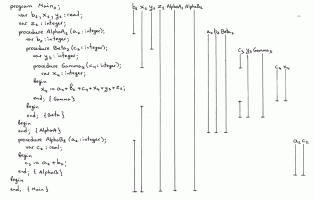
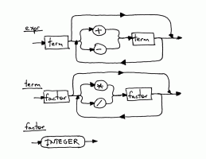

Is there a reason we are using OrderedDict rather than a regular python dictionary?
Also on Ruslan's Blog

Let’s Build A Simple Interpreter. Part 14: …
- 3 years ago
- 51 comments
Only dead fish go with the flow. As I promised in the last article, today we’re …

Let’s Build A Simple Interpreter. Part 2.
- 5 years ago
- 16 comments
In their amazing book “The 5 Elements of Effective Thinking” the authors …

Let’s Build A Simple Interpreter. Part 1.
- 5 years ago
- 55 comments
“If you don’t know how compilers work, then you don’t know how …

Let’s Build A Simple Interpreter. Part 5.
- 5 years ago
- 19 comments
How do you tackle something as complex as understanding how to …

Let’s Build A Simple Interpreter. Part 12.
- 4 years ago
- 28 comments
“Be not afraid of going slowly; be afraid only of standing still.” - Chinese …

Let’s Build A Simple Interpreter. Part 13: …
- 3 years ago
- 8 comments
Anything worth doing is worth overdoing. Before doing a deep dive into the …
Let’s Build A Simple Interpreter. Part 16: …
- a year ago
- 7 comments
Learning is like rowing upstream: not to advance is to drop back. — Chinese …

Let’s Build A Simple Interpreter. Part 4.
- 5 years ago
- 14 comments
Have you been passively learning the material in these articles or have you …
- Recommend Recommended 1
- Find More Discussions
Discussion Recommended!
Recommending means this is a discussion worth sharing. It gets shared to your followers' Disqus feeds, and gives the creator kudos!
- TweetShare
- Sort by Best

Sebastian Sung Won Cho • 2 years ago see moreI think he is using OrderedDict so at the end we can see at what order the symbols were added to the SymbolTable. If you would use the default Python dictionary, there is a chance that when you print the content of the dictionary, the order would be different than what you see in the tutorial, so that might confuse some people.
If you are following this tutorial using Python 3.6 or above, you can safely use the regular Python dictionary, as the insertion order is preserved: https://stackoverflow.com/a...
pmst • 2 years ago see moreThis is the awesome tutorial !! Thank you so much. BTW, I am a iOS developer from China(member of swift.gg ), I hope to translate your tutrioal into Chinese, This tutorial is so helpful to newbies like me who want to learn interpreter. And I will reserved original artical url in the top of translation artical. Would you authorize me to do it? my email address colourful98765@gmail.com
Quetzalcoalt • 3 years ago see moreUh i'm having a problem, i'm writing a compiler for a grammar given from my university as a project, and this is one of the best tutorials i've found. I'm writing it in java and the grammar is similar to C, so far everything is working (i think, during lots of testing and debugging, writing on paper because i don't have AST visualizer). My problem is that i don't know where is the method that checks for the variable type. If i have " int a = 3; int b = a/2; " b will be 1.5 even though its an int. The interpreter should not check the types right ? that's the symbolTables job. I just can't figure where the testing is made. Struggling from the past 4 days on this =/. Also is the symbolTable like a hashmap<string, string=""> or it's a hashmap<string, symbol=""> because symbol has two strings in it for var name and var type. so it prints a but i made it as a <string, string=""> and have it as int <int>, double <double> , a <int> ect ect. I also don't understand what visitAsign and visitVar does in the symbolBuilder.
Atit Shetty • 3 years ago see moreThank you so much for this series.
Loved the content and superb explanation.exFil rspivak • 3 years ago
Richard Rast • 4 years ago see moreI'm loving this series but this post seemed a bit unfinished. For example you talked about these different types (INTEGER vs REAL) but didn't actually use them anywhere. It seems like semantic analysis would be really great here! I suppose it's a bigger topic and deserves its own blog post, but still ...
Diego Híjar Ruiz • 4 years ago see moreSo.. im having a problem with the code, when i run the spi.py it says:
"Traceback (most recent call last):
File "C:\Users\Diego\Documents\proyecto corona\Calculadoras\python\spi.py", line 773, in <module>
main()
File "C:\Users\Diego\Documents\proyecto corona\Calculadoras\python\spi.py", line 752, in main
text = open(sys.argv[1], 'r').read()
IndexError: list index out of range"Im new with python so i dont know if im missing something, someone help? :S
Mark • 4 years ago see moreThis is the best tutorial I have ever read. I stayed up till 1AM just to get to the end. The sad part is I see it's not the end and I have wait for rest of the knowledge. Maybe Netflix it and release the whole season at once next time? lol Thanks Again! Nothing like binging on Interpreters. I wish you would discuss some basics on OO things. I am writing my own high level language and it is OO. I think I have the concepts now but it would be nice to see an example of how to handle objects and their defined methods that you do not know about, like the code referencing a created class. The second OO topic is code referencing a class that is available to your interpreter. How these two cases are handled would be very interesting to me.
Diego Marcia Mark • 4 years ago • edited see moreBeing the reference language Pascal, I don't think OOP will be discussed... How have you thought to implement Objects? Off the top of my head, I'd use some special Structures which carry (obfuscated to the user) a set of function signatures. It's a bit naive solution, and not very "strict" wrt Languages Theory (a user-defined Class should be a new type in your type system).
What's your idea?
Russell Coleman • 4 years ago see moreYo thank you so much dude this tutorial is incredible!! I've been translating this into C to work on an embedded system because I needed a way to write simple easily modifiable scripts on the device. Can't wait for functions! Thank you so much for taking time out of your day to write all this, I'm learning a lot!
Hugo Dufour • 4 years ago • edited see moreI'm working on a C compiler project, but it's written in C, how do you suggest I manage data structures? :/
(if you want to see it's on my GitHub history "NuclearCoder")Alex • 4 years ago see moreGreat job! Can't wait getting my "hands dirty with parsing nested procedures" ;)